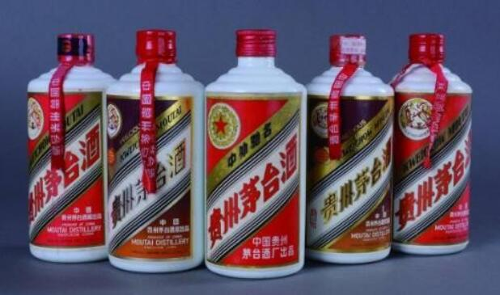
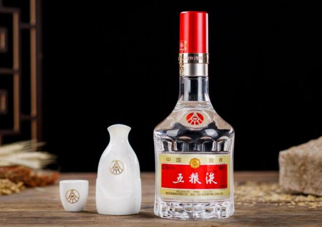
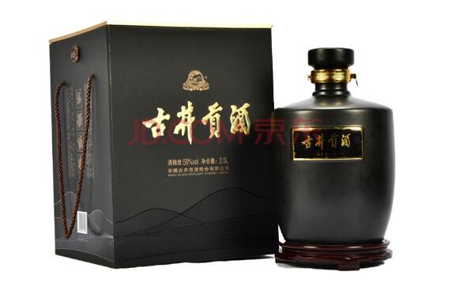
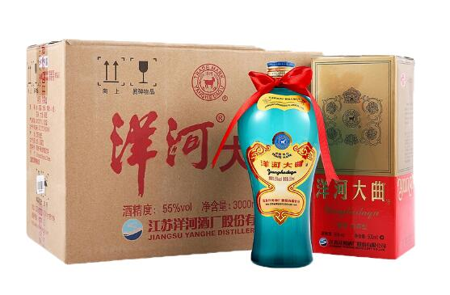

茅台酒
茅台酒是中国大曲酱香型酒的鼻祖，它具有色清透明、酱香突出、醇香馥郁、幽雅细腻、入口柔绵、清冽甘爽、酒体醇厚丰满、回味悠长、空杯留香持久的特点，人们把茅台酒独有的香味称为“茅香”，是中国酱香型风格的典型。茅台酒液纯净透明、醇馥幽郁的特点，是由酱香、窖底香、醇甜三大特殊风味融合而成，现已知香气组成成分多达300余种。茅台酒香气成分众多，有人赞誉“风味隔壁三家醉，雨后开瓶十里芳”。茅台酒香而不艳，在酿制过程中从不加半点香料，香气成分全是在反复发酵的过程中自然形成的。它的酒度一直稳定在52°—54°之间，曾长期是全国名白酒中度数最低的。具有喉咙不痛、也不上头、能消除疲劳、安定精神”等特点。”

五粮液
五粮液酒以高粱、大米、糯米、小麦、玉米五种谷物为原料，以“包包曲”为糖化发酵剂，以陈年老窖池为发酵设备，依托独有的“跑窖法”工艺，通过泥窖发酵、分层起糟、看糟配料、量质摘酒、按质并坛”传统工艺特色等一百多道工序酿造而成，以“香气悠久，味醇厚，入口甘美，入喉净爽，各味谐调，恰到好处，尤以酒味全面而著称”的独特风格闻名于世。

古井贡酒
古井贡酒，属于浓香型白酒，具有“色清如水晶，香醇如幽兰，入口甘美醇和，回昧经久不息”的特点。它以安徽淮北平原优质小麦、古井镇优质地下水以及颗粒饱满、糯性强的优质高梁为原料，并在亳州市古井镇特定区域范围内，利用其自然微生物环境，按古井贡酒传统工艺生产而成。古井贡酒呈香、呈味的酯类物质，在种类和含量上普遍多于其他浓香型大曲酒。通过定量分析，古井贡酒含有80多种香味物质，比其他浓香型酒多15~30种，并且这些香味物质的含量是其他浓香型酒的2~3倍。同时，在古井贡酒中还拥有一个完整的有机酸丙酯系列，这是其他浓香型大曲酒所没有的。

洋河大曲
洋河大曲以优质高粱、大米、糯米、玉米、小麦、大麦、豌豆、水为原料，在地理标志产品保护范围内，按传统工艺与现代生物技术相结合生产的白酒。具有绵、柔、甜、净、香的独特风格，具体表现为绵柔、绵甜、绵爽等的口味。质量特色：低而不淡、柔而不寡、绵长尾净、丰满协调。 [1] 洋河大曲以优质黏高粱为原料，再用小麦，大麦，豌豆培养的高温大曲为糖化发酵剂，以美人泉之水酿造而成。洋河大曲属浓香大曲白酒，酒液澄澈透明，酒香浓郁清雅，入口鲜爽甘甜，口味细腻悠长。洋河大曲被中国和日本公认为东方的洋酒，曾多次荣获“国际名酒”和入选中国八大名酒行列。 [3]